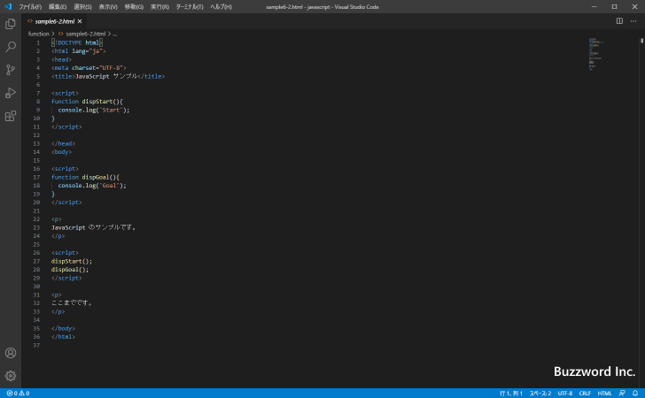

同じファイルを分割して複数のエディターグループで表示する
Visual Studio Code ではファイルが表示されているエディターを左右または上下に分割して同じファイルを複数のエディタで同時に表示することができます。非常に長いテキストが含まれるファイルを開いている場合に、異なる場所をそれぞれのエディター上で表示して作業したい場合に便利です。ここでは Visual Studio Code で同じファイルを分割して複数のエディターグループで表示する方法について解説します。
開いているファイルを分割して表示する
現在開いているファイルを分割して同じファイルを複数のエディタで表示する方法です。非常に長いテキストが含まれるファイルの別々の場所同時に見たい場合に便利です。
例として次のようなファイルを開いている状態から試してみます。

ファイルを分割して表示するには「表示」メニューの中の「エディターレイアウト」にマウスを合わせてください。サブメニューとして「分割(上)」「分割(下)」「分割(左)」「分割(右)」の 4 つが表示されます。
「分割(上)」メニューをクリックすると、現在アクティブになっているエディターが上下に分割され、現在のエディターの上に新しいエディターが表示されて同じファイルが表示されます。
「分割(下)」メニューをクリックした場合も同じように上下に分割されて、現在のエディタの下に新しいエディターが表示されて同じファイルが表示されます。
「分割(左)」メニューをクリックすると、現在アクティブになっているエディターが左右に分割され、現在のエディターの左に新しいエディターが表示されて同じファイルが表示されます。
「分割(右)」メニューをクリックした場合も同じように左右に分割されて、現在のエディタの右に新しいエディターが表示されて同じファイルが表示されます。
分割は 1 回だけではなくさらに続けて行うことができます。例えば左右に分割したあとで、そのうちの一つのエディターをさらに上下に分割することもできます。
上下に分割したエディターをさらに上下に分割することもできます。
分割されたエディターは、ひとつひとつをエディターグループと呼びます。エクスプローラーを表示すると、現在開いているエディターグループを確認することができます。

一つ一つのエディターグループでは別のファイルを開くこともできます。別のファイルを開く場合は、開きたいエディターグループをアクティブにしたあとでファイルを開いてください。そのエディターグループだけでファイルが開きます。
素早く右に分割する
エディターを左右に分割して利用する機会が多いためか、エディターを右に分割するためのアイコンが用意されています。現在アクティブになっているエディターの右上には次のアイコンが表示されています。
このアイコンをクリックすると、「分割(右)」メニューをクリックした時と同じように現在アクティブのエディターが左右に分割され、現在のエディターの右に新しいエディターが表示されて同じファイルが表示されます。
このように右に分割する場合は専用のアイコンをクリックすることで素早く分割することができます。
エディターグループを閉じる
エディターグループを閉じるには、閉じたいエディターグループの右上に表示されている「・・・」をクリックし、表示されたメニューの中から「すべて閉じる」をクリックしてください。
対象のエディターグループを閉じることができました。(エディターグループの中に保存していないファイルがあった場合は保存するかどうかの確認ダイアログが表示されます)。
なおエディターグループは開いているファイルをすべて閉じると自動的に閉じますので、エディターグループで開いているすべてのファイルのタブの「×」をクリックしてファイルを閉じるとエディターグループを閉じることができます。
対象のエディターグループを閉じることができました。
-- --
Visual Studio Code で同じファイルを分割して複数のエディターで同時に表示する方法について解説しました。
( Written by Tatsuo Ikura )

著者 / TATSUO IKURA
初心者～中級者の方を対象としたプログラミング方法や開発環境の構築の解説を行うサイトの運営を行っています。